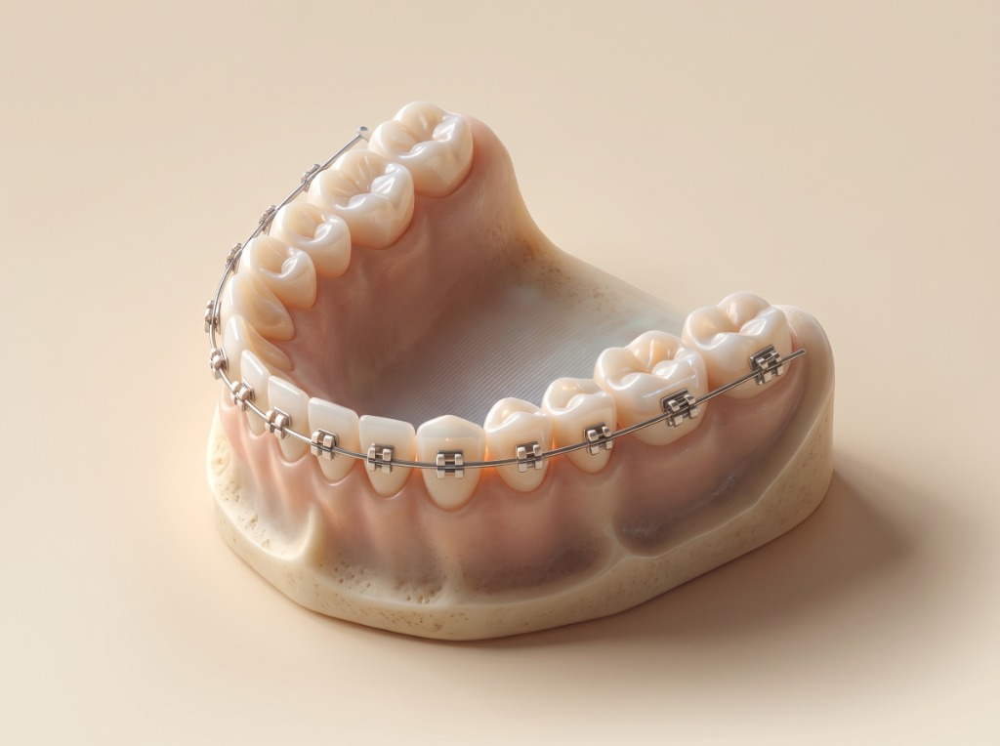

Quartile
Live from PubMed & Europe PMC
Every new paper on artificial intelligence in orthodontics, ranked by its journal's SCImago quartile and distilled into a four-line clinical summary.

Ortho Papers is built around Google Gemini's free tier (15 requests/minute, 1,500/day). Summaries are batched four papers per call and cached on your device, so refreshes never waste quota.